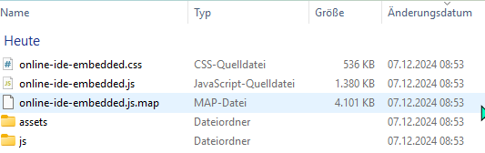

−Inhaltsverzeichnis
Integration der Online-IDE in eigene Webseiten
A. Mittels iframe-Tag
Die Integration mittels iframe-Tag ist sehr einfach. Alle Dateien, die Sie dazu auf Ihrem Server hosten müssen, finden Sie hier zum Download.
- Laden Sie die Dateien auf Ihren Server in ein Verzeichnis
includehoch, das dann z.B. unter https://www.meineseite.de/include erreichbar ist. - Das
iframe-Tag zum Einfügen auf Ihrer Seite können Sie einfach mit dem Wrapper-Generator von Christoph Gräßl erstellen. - Ersetzen Sie die Adresse
https://embed.learnj.deim generierten Tag durch die Adresse Ihres Servers, z.B.https://www.meineseite.de.
Wenn das iframe-Tag auf einer anderen Domain integriert wird als der, auf der die include-Dateien liegen (z.B. in einem Mebis-Kurs) wird i.d.R. das Laden der eingebundenen Schriftarten vom Server, auf dem die include-Dateien liegen, blockiert. Das beeinträchtigt die IDE kaum. Falls Sie eine perfekte Lösung anstreben können Sie das Nachladen der Schriften erlauben, indem Sie Ihren Server so konfigurieren, dass er einen entsprechenden Access-Control-Origin-Header liefert. Im Falle eines Apache-Webservers lautet die entsprechende Konfigurationszeile für iframe-Tags in Mebis beispielsweise:
Header Set Access-Control-Allow-Origin "https://lernplattform.mebis.bayern.de"
B. Ohne iframe-Tag
Alte Anleitung für die Versionen 1.x
Die folgende Dokumentation gilt ab Version 2.0:
Alle Dateien, die Sie für Ihren Webserver benötigen, finden Sie in diesem zip-Archiv. Die oberste Verzeichnisebene innerhalb des Archivs sieht so aus:
online-ide-embedded.css und online-ide-embedded.js laden:
{kind=link}
<head> <link rel='stylesheet' type='text/css' media='screen' href='./online-ide-embedded.css'> <script type="module" crossorigin src="./online-ide-embedded.js"></script> </head>
Alle weiteren benötigten Dateien werden dann automatisch aus dem Verzeichnis assets nachgeladen. Das Verzeichnis js benötigen Sie nur dann, wenn Sie die Online-IDE auch mittels <iframe>-tags einbinden möchten (s.o.). Ansonsten können Sie es einfach löschen.
Nach dem vollständigen Aufbau der Seite sucht die Online-IDE alle DIV-Tags mit der Klasse „java-online“ und baut sie zu Online-IDEs um. Beispiel:
<div class="java-online" style="width: 80%; height: 400px; margin-left: 5px" data-java-online="{ 'id': 'Vererbung_Beispiel_1', 'withBottomPanel': true, 'withFileList': true, 'withPCode': true, 'withConsole': true, 'withErrorList': true }"> <script type="text/plain" title="Test1.java"> World w = new World(); new Quadrat(40, 20, 300); </script> <script type="text/plain" title="Test2.java"> class Quadrat extends Rectangle { public Quadrat(double left, double top, double width){ super(left, top, width, width); } } </script> <script type="text/plain" title="Tipp" data-type="hint"> ## Tipp: Tipps werden in einer einfachen Markdown-Syntax verfasst, die **Fettschrift** u.ä. ermöglicht, aber auch Syntax-Highlighting im Fließtext (``class Quadrat extends Rectangle { }``) und in ganzen Absätzen: ``` double v = Math.random()*8 + 2; // Betrag der Geschwindigkeit zwischen 2 und 10 double w = Math.random()*2*Math.PI; // Winkel zwischen 0 und 2*PI vx = v * Math.cos(w); vy = v * Math.sin(w); ``` </script> </div>
![]()
class MyFirstTestClass {
@Test
void testSquareRoot() {
double squareRootOfFour = Math.sqrt(4);
assertEquals(2.0, squareRootOfFour,
"There semms to be something wrong with Math.sqrt!");
}
@Test
void testDivision() {
double n = 5 / 2 * 3;
println(n);
assertEquals(7.5, n,
"5/2 * 3 doesn't yield 7.5 -> mysterious...");
}
}
- im Einzelschrittmodus ausgeführt wird(Klick auf ),
- an einem Breakpoint hält (Setzen eines Breakpoints mit Mausklick links neben den Zeilennummern und anschließendes Starten des Programms mit ) oder
- in sehr niedriger Geschwindigkeit ausgeführt wird (weniger als 10 Schritte/s).
Bedeutung der Konfigurationsparameter
Das div-Element, das zur Online-IDE umgebaut werden soll, kann durch durch ein Attribut data-java-online konfiguriert werden. Die darin enthaltenen Einstellungen bedeuten:
| Einstellung mit Beispielwert | Bedeutung |
|---|---|
| 'id': 'Beispiel_1' | Eindeutige id innerhalb der Seite. Sie wird benutzt, um Änderungen des Schülers am Quelltext in der Datenbank des Browsers zu speichern, so dass sie beim nächsten Seitenaufruf am selben Browser wieder vorhanden sind. |
| 'withBottomPanel': true | Blendet den Fensterteil unterhalb des Programmtextes ein/aus |
| 'withFileList': true | Falls withBottomPanel den Wert true hat, kann hiermit die Dateiliste (linker Teil des bottom panels) ein- oder ausgeblendet werden. |
| 'withPCode': true | Falls withBottomPanel den Wert true hat, kann hiermit das PCode-Panel ein- oder ausgeblendet werden. |
| 'withConsole': true | Falls withBottomPanel den Wert true hat, kann hiermit das Console-Panel ein- oder ausgeblendet werden. |
| 'withClassDiagram': false | Falls withClassDiagram den Wert true hat, wird rechts ein Tab eingeblendet, in dem automatisch ein Klassendiagramm mitgezeichnet wird. |
| 'withErrorList': true | Falls withBottomPanel den Wert true hat, kann hiermit das Fehler-Panel ein- oder ausgeblendet werden. |
| 'speed': 2000 | Ausführungsgeschwindigkeit des Programms in Steps/s. Als Wert kann auch 'max' angegeben werden. |
Einfachste Variante:
<HTML> <div class="java-online" style="width: 80%; height: 200px; margin-left: 5px" data-java-online="{ 'id': 'Vererbung_Beispiel_2', 'withBottomPanel': false }"> <script type="text/plain" title="Test2.java"> for(int i = 0; i < 10; i++){ println("Das ist Zeile " + (i + 1)); } </script> </div> </HTML>
- im Einzelschrittmodus ausgeführt wird(Klick auf ),
- an einem Breakpoint hält (Setzen eines Breakpoints mit Mausklick links neben den Zeilennummern und anschließendes Starten des Programms mit ) oder
- in sehr niedriger Geschwindigkeit ausgeführt wird (weniger als 10 Schritte/s).
Einbinden eines eigenen Spritesheets:
<div class="java-online" style="width: 100%; height: 200px; margin-left: 5px" data-java-online="{ 'id': 'Campfire', 'withBottomPanel': false, 'spritesheetURL': 'javaonline/assets/test-spritesheets/Campfire.zip' }"> <script type="text/plain" title="Test2.java"> for(int i = 0; i < 4; i++){ Sprite s = new Sprite(50 + 80*i, 300, SpriteLibrary.JavaKara, i); s.scale(2); } </script> </div>
- im Einzelschrittmodus ausgeführt wird(Klick auf ),
- an einem Breakpoint hält (Setzen eines Breakpoints mit Mausklick links neben den Zeilennummern und anschließendes Starten des Programms mit ) oder
- in sehr niedriger Geschwindigkeit ausgeführt wird (weniger als 10 Schritte/s).
Zugriff auf die Quelltexte von anderen Skripten aus
Wird die Online-IDE nicht mittels <iframe>-Tag eingebunden, so können andere Skripte auf der Webseite lesend auf die Java-Quelltexte zugreifen. Das entsprechende API dazu ist hier dokumentiert.
Offline-Version
Die Embedded-Version kann auch offline aus dem Dateisystem heraus betrieben werden, wenn ein kleiner Webserver mitgeliefert wird. Hier ein Beispielarchiv mit Startdateien für Windows und Mac OS X:
offlinetest.zip (Version vom 20.09.2022)
Von der Offline-Version verwendete Software